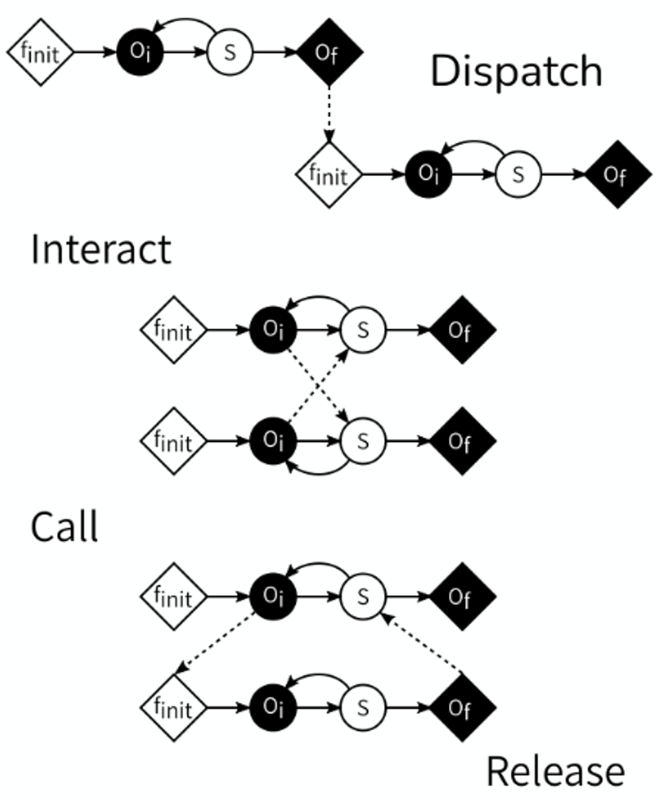
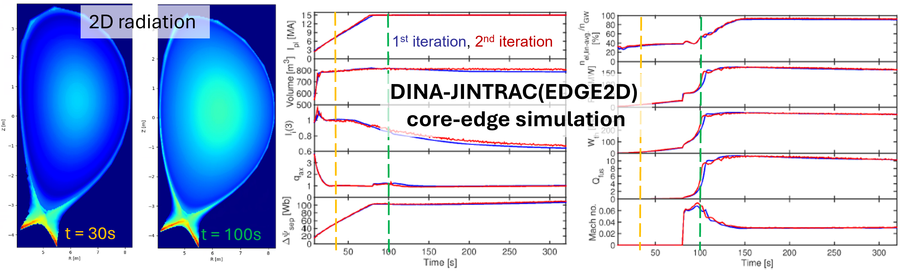
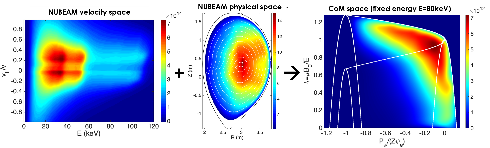

Open sourcing IMAS
status, challenges and opportunities
Olivier.Hoenen@iter.orgOutline
- Introduction to IMAS
- Open sourcing IMAS
- Perspectives
Introduction to IMAS
What is IMAS?
The Integrated Modelling & Analysis Suite is the collection of physics software that will be used to support ITER operations and research as defined in the ITER Integrated Modelling Programme...
... it comprises plasma modelling tools for systematic planning (evaluate candidate plasma operating scenarios and assist in the development of plasma control strategies) and analysis of each ITER discharge.
A brief history
- 2003: the Integrated Tokamak Modelling (ITM) starts discussing common data ontology in EU
- 2011: IMAS design and development started at ITER, building upon ideas from the ITM
- 2015: first IMAS prototype published 1 (version controlled ontology: 3.2.0, 30 classes)
- 2024: last version 3 release (3.42.0, 81 classes), and introduction of the version 4
IMAS software stack
Applications
Generic tools
Data model
IMAS software stack
Applications
- Standalone physics codes
- Data processing pipelines or workflows
- Multi-machines databases
Generic tools
- Data access, storage and manipulation
- Data visualisation
- Simulations execution and management
Data model
- Machine independent data structures
- Can be used for code coupling
- Metadata and provenance
Data model
- Covers simulation and experimental data
- Made of Interface Data Structures (IDS)
- Described in XML in the Data Dictionary
- Made machine agnostic by design
- Used in experiments (e.g. WEST, ITER)
- Mapping of existing experiments data
- Support validation of ITER applications
- Can serve as a data standard for tokamaks fusion!
Data dictionary
- Describes the hierarchical structures in XSD
- Has strict rules for modifications (active vs alpha IDS)
- Changes driven by the community via ITER JIRA trackers
Generic tools
data access


visualisation

workflows



databases

Applications



Open sourcing IMAS
A long journey
- 2006: ITER agreement
-
2012: repositories in VCS
Atlassian (JIRA, Bitbucket, Bamboo)
password protected (ITER account) - 2019: software license discussions
-
2022: modified BSD license,
access via IMAS CA -
2024: Fusion Private Sector Workshop,
listing software with GIP from IO,
approved open sourcing GIP codes - 2025: first repositories moved to GitHub

IMAS-Data-Dictionary (DD)
For the definition and documentation of IMAS IDS

- IDS schemas definition

- Light Python code (build, CLI tool)
- For all questions and requests
- Documentation on readthedocs
- Package available on PyPI
IMAS-Python
For accessing and manipulating IDS in Python

- Source code under
- Documentation, package on PyPI
- DD selection & conversion at runtime
- Lazy loading, metadata, ducktyping
- I/O with
imas-corenot open yet - Self-described I/O with netCDF format
# create and explore IDS
import imas
from imas.util import inspect
ids = imas.IDSFactory("4.0.0")
equil = ids.equilibrium()
inspect(equil)
print(equil.time.metadata.units)
# fill-in data in IDS
equil.ids_properties.homogeneous_time=1
equil["ids_properties/comment"]="simple test"
equil.time=[1.0]
# save IDS into netCDF
fout=imas.DBEntry("myequil.nc","w")
fout.put(equil)
fout.close()
# read IDS from netCDF
with imas.DBEntry("myequil.nc","r") as fin:
eq = fin.get("equilibrium",lazy=True)
print(eq.ids_properties.comment)
The Plasma Control System Simulation Platform
- To develop, test, integrate controllers for ITER
- Powered by MATLAB Simulink®
- Available modules and models under
Available soon on GitHub...
IDS-Validator
- Python tool to perform validation checks on IDS values
- Validation rulesets are made of decorated Python functions
- Rules can be generic or use-case specific (a given tokamak, code)
GGD-VTK plugin
- ParaView plugin to visualise grids/meshes stored as GGD2 in IDS
- More readers for 1D/2D profiles, beams, lines of sight...
- Access to data via imas-python
SimDB + Dashboard
- Tools to build, share and explore databases of IMAS simulations
- CLI client, remote server, REST API
- Web dashboard allows to query/compare simulations
Challenges and opportunities
The case of software with BIP
- IMAS relies on software developed within ITER Members (BIP)
- IO invests effort in using/combining/extending codes in IMAS (GIP)
- Releasing GIP that contains BIP requires BIP to be open
- IO asked some code owners (EC, labs) about the possibility to release their BIP as open source → a general trend in fusion?
Contributing back
Contributing back is key for project sustainability and can take several forms
| type | details | example at IO |
|---|---|---|
| code base | tests, bug reports, discussions | TORAX |
| support contracts (e.g. new features) | MUSCLE3 | |
| code snippets | Easyconfigs | |
| recognition | promote use at different sites | EasyBuild |
| integrate with other software | UDA |
Migrating to a new developer platform
Reasons: - de facto standard for most open source projects - immense pool of tools, online resources - integrate all modern CI/CD pipelines, features freely available Difficulties: - documentation adaptation - clash of names (packages, etc...) - transition period in-between two platforms (if migration can not be done in one go) Adapting communication channelsLimitations and perspectives
Towards a general data standard for fusion- Very few attempts on stellarators: some IDS are geared towards tokamaks (axisymmetric description) - mapping effort for exp data to support validation of IMAS apps - reduction of the number of dupplicated software, and concentration of the effort (long term) - FAIR data + opening of the metadata
Summary
- GIP software at IO can finally be Open Source!
- IMAS-Data-Dictionary, IMAS-Python and PCSSP are available right now
- BIP software → IO asked owners for open license, already received some positive answers!
- Open IMAS metadata → FAIR data principles
- Our hope: reuse↗ contributions↗ code quality↗ spread of effort↘ administrative overheads↘
- Facilitate engagement from persons outside fusion